After completion of this session the participant should be able to:
This session covers resuscitation of a newborn (who has just been delivered).
See resuscitation for resuscitation of the infantThis is the critical period of transition from intra-utero life to extra-utero independent existence.
Effective care at birth is needed to anticipate problems with this transition and to provide support to ensure stabilization. Most babies born with apnoea at birth will start to breathe themselves within 60 – 90 seconds if they have a clear airway.
Approximately 10% of newborns require some assistance to begin breathing at birth; very few, only about 1% need more than basic resuscitation to survive.
These are deliveries where it is more likely that resuscitation will be required. These include deliveries to mothers
The delivery may progress in a way that makes it more likely that the infant will require resuscitation; such deliveries include those where there is
The recommended temperature for the delivery room is 25°C. Equipment should be in an area in the delivery room for facilitating immediate care of the newborn. This area is essential for all health facilities where deliveries take place. To prevent drafts of air, shut all windows and switch off fan before the birth and if a resuscitaire is available, it should be warmed up 30 minutes before the delivery. You should have several pre-warmed absorbent towels or cloths available. Initially, the baby is placed on one of the towels that can be used to dry most of the fluid. This towel should then be removed and a fresh cloth should be used for continued drying and stimulation
Nurse/ midwives should identify a helper and explain roles: Helper may be a qualified nursing staff, another untrained hospital staff or relative of mother. You should assign and explain the role to helper according to his/ her skill. Their role may be to help you dry and stimulate the infant or to feel the cord for the heart rate.
Before birth check that all equipment and supplies are available and are in working condition and identify which personnel will help if resuscitation is required.
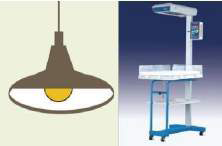
| Equipment |
|---|
|
| Supplies |
|---|
|
Once the equipment has been selected and assembled, check the bag and mask to be sure they function properly. Bags that have cracks or tears, valves that stick or leak, or masks that are cracked or deflated must not be used. The equipment should be checked before each delivery. The operator should check it again as they wait to receive the baby.
|
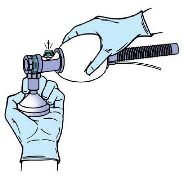 Check the bag against your hand |
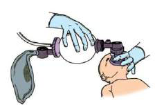 …before using it on a baby |
Most newborns require only simple supportive care at and after delivery. Deliver the baby on to
mother’s abdomen as in the Help Babies Breathe protocol, note the time of birth.
The baby is placed on the first dry warm cloth, which can be used to dry most of the fluid. This
cloth should then be removed and the second cloth should be used for continued drying and
stimulation.
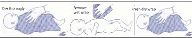
TWO clothes are required – one to dry and a fresh one to wrapAfter birth the baby remains wet with amniotic fluid which if not dried immediately can lead to heat loss. This heat loss may result in rapid decrease in infant’s body temperature.
Breathing and warmth go together and breathing should be assessed whilst drying the baby. Drying itself often provides sufficient stimulation for breathing to start in mildly depressed newborn babies.
What other forms of stimulation may help a baby breathe?
| Assessment | Decision |
|---|---|
| Baby is crying | No need for resuscitation or suctioning. Provide routine care. |
| Baby is not crying, but his chest is rising regularly | No need for resuscitation or suctioning. Provide routine care. |
| Baby is gasping | Start resuscitation immediately. |
| Baby is not breathing | Start resuscitation immediately. |
| Baby has very poor tone | Start resuscitation immediately. |
Key facts for providers - How to provide essential newborn care at delivery
|
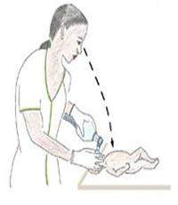
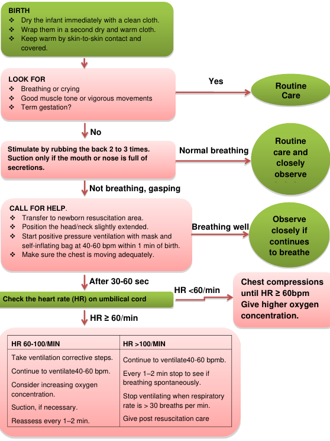
ABCs of ResuscitationEnsure that the Airway is open and clear Be sure that there is Breathing, whether spontaneous or assisted Make certain that there is adequate Circulation of oxygenated blood. It is important to maintain body temperature during resuscitation as newly born babies are wet following birth and heat loss is great. |
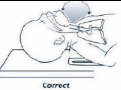
The baby should be positioned on the back, with the neck slightly extended in the “neutral” position. The neutral position while supine is the best position for assisted ventilation with a mask. Care should be taken to prevent hyperextension or flexion of the neck, since either may restrict air entry.
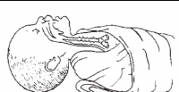
If the baby has a large occiput (back of head) resulting from moulding, oedema, or prematurity, you may place a rolled cloth to help the position.
Secretions may be removed from the airway by wiping the nose and mouth with a towel or by
suctioning with a bulb syringe or suction catheter. If the newborn has copious secretions coming from
the mouth, turn the head to the side. This will allow secretions to collect in the cheek where they can
be removed more easily.
Use a bulb syringe or a catheter attached to mechanical suction to remove any fluid that
appears to be blocking the airway.
After delivery, the appropriate method for clearing the airway further will depend on:
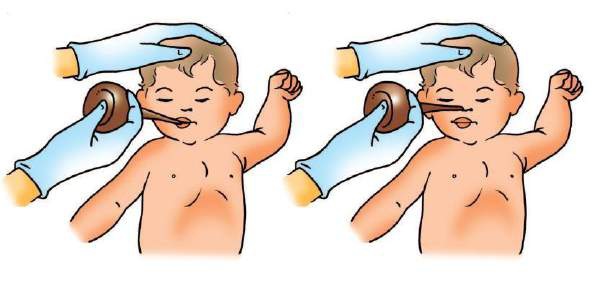
Suction the Mouth and Nose (M before N)
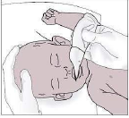
Penguin suction device
If the baby born with meconium-stained fluid has a normal respiratory effort, normal muscle tone, and a heart rate greater than 100 bpm, simply clear secretions if necessary.
If the baby is born through meconium stained amniotic fluid and has depressed respirations, has depressed muscle tone, and/or has a heart rate below 100 bpm, suctioning of the mouth and nose soon after delivery is indicated.
Evaluate the baby in the following order:
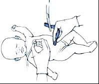
The easiest and quickest method to determine the heart rate is to feel for the pulse at the base of the umbilical cord or you can listen over the heart using a stethoscope. A good way to indicate to your colleague the rate of the heartbeat is to tap it out with your finger.
Indications for bag and mask ventilation are:
Ventilation is the single most important and most effective step in cardiopulmonary
resuscitation of the compromised newly born baby.
Priority should be given to providing adequate ventilation rather than to chest compressions.
Appropriately sized masks
A variety of mask sizes, appropriate for babies of different sizes, should be available at every
delivery, since it may be difficult to determine the appropriate size before birth. For the mask to
be of the correct size, the rim will cover the tip of the chin, the mouth, and the nose but not the
eyes.
Too large- will not seal well and may cause eye damage.
Too small- will not cover the mouth and nose and may occlude the nose.
Shape of face masks
Masks come in two shapes: round and anatomically shaped. Anatomically shaped masks are shaped to fit the contours of the face. They are made to be placed on the face with the most pointed part of the mask fitting over the nose.
|
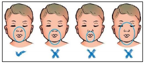 1. Correct size and position |
Place the mask on the face so that it covers the nose and mouth, and the tip of the chin rests within the rim of the mask.
The mask usually is held on the face with the thumb, index, and/or middle finger encircling much of the rim of the mask, while the ring and fifth fingers lift the chin forward to maintain a patent airway.
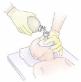
To minimize complications resulting from high ventilation pressures, bags have certain safety features to prevent or guard against inadvertent use of high pressures. They have a pressurerelease valve (commonly called pop-off valve), which generally is set by the manufacturer at 30 to 40 cm H2O. If a peak inspiratory pressure greater than 30 to 40 cm H2O is generated, the valve opens, limiting the pressure that is transmitted to the newborn.
The self-inflating bag, as its name implies, inflates automatically, it remains inflated at all times, unless being squeezed. Peak inspiratory pressure (PIP) also called peak inflation pressure is controlled by how hard the bag is squeezed.
|
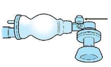 The self-inflating bag with pop off valve (which can be held to increase pressures if needed, but after other manoeuvers have been tried) |
The best indicator that the mask is sealed and the lungs are being adequately inflated is the chest movements with each breath. Most newborns respond to effective ventilation with a rising heart rate that exceeds 100 beats per minute, improvement in colour and, finally, spontaneous respiratory effort.
What ventilation rate should you provide during bag and mask?
During the initial stages of neonatal resuscitation, breaths should be delivered at a rate of 40 to 60 breaths per minute, or slightly less than once a second.
What concentration of oxygen should be used when giving positive-pressure ventilation during resuscitation?
Resuscitation of term newborns with room air is just as successful as resuscitation with 100% oxygen. Ventilation of the lungs is the single most important and most effective step, regardless of the concentration of oxygen being used.
During ventilation of preterm babies born at or before 32 weeks of gestation, it is recommended to start oxygen therapy with 30% oxygen. If blended oxygen is not available then it is better to use air rather than with 100% oxygen (5).
Improvement is indicated by the following 4 signs:
Possible reasons for ineffective ventilation:
If you hear or feel air escaping from around the mask, reapply the mask to the face and try to form a better seal. Use a little more pressure on the rim of the mask and lift the jaw a little more forward. Do not press down hard on the baby’s face. The most common place for a leak to occur is between the cheek and bridge of the nose.
An airtight seal between the rim of the mask and the face is essential to achieve the positive pressure required to inflate the lungs with the bag.
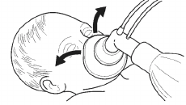
Another possible reason for insufficient ventilation of the baby’s lungs is a blocked airway. To correct this:
Gradually increase the pressure by squeezing the bag more every few breaths until there are visible chest movement with each breath. If this does not work, occlude the pop off valve for a few breaths to see if the chest moves better
| Corrective Steps | Actions |
|---|---|
| Mask adjustment | Be sure there is a good seal of the mask on the face. |
| Reposition airway | The head should be in the “neutral position” |
| Suction mouth and nose | Ventilate with the baby’s mouth slightly open and lift the jaw forward if these manoeuvers do not help place an airway |
| Pressure increase | Gradually increase the pressure every few breaths, until there are visible movements with each breath. |
The problems related to gastric/abdominal distention and aspiration of gastric contents can be reduced by inserting an orogastric tube, aspirating gastric contents, and leaving the gastric tube in place and uncapped to act as a vent for stomach gas throughout the remainder of the resuscitation.
Chest compressions should be started whenever the heart rate remains less than 60 bpm despite effective positive-pressure ventilation. (You assess the heart rate after the first 30 seconds of effective ventilation. Use the umbilical cord or listen with a stethoscope in the newborn. If the pulse is slow or absent in the neonate you give BMV for 30 seconds and reassess, if it is still slow or absent then you start chest compressions.)
How many people are needed to administer chest compressions, and where should they stand?
Remember that chest compressions are of little value unless the lungs are also being ventilated with oxygen. Therefore, 2 people are required. One administers effective ventilation and one to compress the chest.
There are two techniques for performing chest compression. These techniques are:
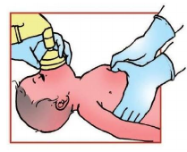
The thumb technique is accomplished by encircling the thorax with both hands and placing the thumbs on the sternum and the fingers under the baby’s back supporting the spine. The thumbs can be placed side by side or, on a small baby, one over the other.
The thumbs will be used to compress the sternum, while your fingers provide the support needed for the back. The thumbs should be flexed at the first joint and pressure applied vertically to compress the heart between the sternum and the spine. Lift your thumbs off the chest during ventilation to avoid restricting effective ventilation.
How do you position your hands using the 2-finger technique?
In the 2-finger technique, the tips of the middle finger and either the index or ring finger of one hand are
used for compressions. Position the 2-fingers perpendicular to the chest as shown, and press with the
fingertips. As with the thumb technique, apply pressure vertically to compress the heart between the
sternum and the spine.
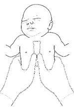
Hands should be positioned on the lower third of the sternum, half way
between the xiphoid and a line drawn between the nipples. You can quickly
locate the correct area on the sternum by running your fingers along the
lower edge of the ribs until you locate the xiphoid.
Then place your thumbs or fingers immediately above the xiphoid. Care
must be taken to avoid putting pressure directly on the xiphoid.
Controlling the pressure used in compressing the sternum is an important part of the procedure. With the fingers and hands correctly positioned, use enough pressure to depress the sternum to a depth of approximately one third of the anterior posterior diameter of the chest and then release the pressure to allow the heart to refill. One compression consists of the downward stroke plus the release. The actual distance compressed will depend on the size of the baby.
|
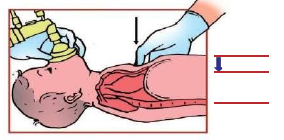 Depress the sternum to a depth of approximately one third of the diameter of the chest |
Are there dangers associated with administering chest compressions?
Chest compressions can cause trauma to the baby.
Two vital organs lie within the rib cage; the heart and lungs. Pressure applied too low, over the xiphoid, can cause laceration of the liver. Also, the ribs are fragile and can easily be broken.
Three compressions to one BMV i.e. a ratio of 3:1
|
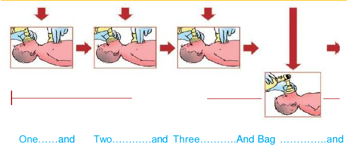 One cycle will consist of 3 compressions plus one ventilation. |
After approximately 30 seconds of well-coordinated chest compressions and ventilation, stop compressions long enough to determine the heart rate again. Feel the pulse at the base of the cord.
If the heart rate is now above 60 bpm
Discontinue chest compressions, but continue positive-pressure ventilation now at a more rapid
rate of 40 to 60 breaths per minute.
Once the heart rate rises above 100 bpm and the baby begins to breathe spontaneously, slowly
withdraw positive pressure ventilation and assess for spontaneous ventilation.
If the heart rate remains below 60 bpm
Despite good ventilation of the lungs with positive-pressure ventilation and improved cardiac output
from chest compressions, a very small number of newborns (fewer than 2 per 1,000 births) will
still have a heart rate below 60 bpm. Continue cardiopulmonary resuscitation in these neonates.
What should you do if the baby is in shock, there is evidence of blood loss, and the baby is responding poorly to resuscitation?
Babies in shock appear pale, have delayed capillary refill and have weak pulses. They may have a persistently low heart rate, and circulatory status often does not improve in response to effective ventilation and chest compressions. If the baby appears to be in shock and is not responding to resuscitation, administration of a volume expander (fluids) and blood may be indicated.
Babies who required prolonged bag and mask ventilation and /or chest compressions are likely to have been severely stressed. Following resuscitation, some babies will breathe normally, some will have ongoing respiratory distress. All babies should have a heart rate above 100bpm and normal SpO2 by 10 minutes.
Babies requiring bag and mask ventilation (more than 5 minutes) and/or chest compressions require post resuscitation care. These babies need to be transferred to the newborn care unit. They require ongoing evaluation, monitoring and management.
It is appropriate to discontinue after effective resuscitation efforts if:
Record the event and explain to the mother or parents that the infant has died. Give them the infant to hold if they so wish.
{kind=link}
{kind=link}
{kind=link}
{kind=link}
{kind=link}
{kind=link}
{kind=link}